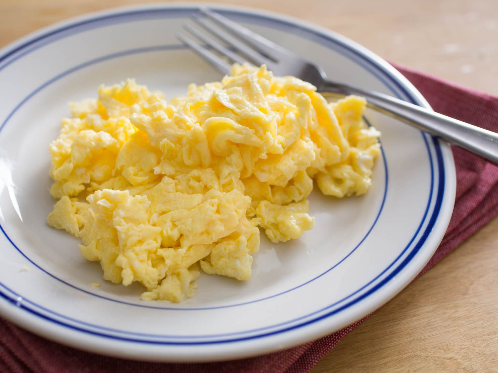

Home
Scrambled Eggs

Description
Yellow clouds cooked in warm butter.
Ingredients
Steps
- Set stovetop to med-high, and put a pan on stove.
- Place a slab of butter in the middle of the pan. As it begins to melt, swirl the butter around to cover every inch of the pan
- Once all of the butter has melted, crack both eggs and add them to the pan.
- Grab a spatula and quickly scramble the eggs. Continue scrambling until the eggs are fully cooked to tase. Remove pan from heat when necessary to prevent burning.
- Add any desired spices or toppings.